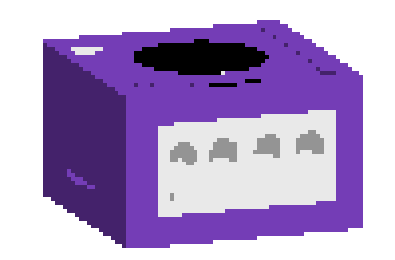

About me
Hi! I'm Enric Armengol, a recent graduate of a Superior Grade in Web Application Development (DAW), with a solid technical background. I mainly have a focus on design and front-end, but my goal is to expand my back-end knowledge.
I've been making websites since I was 16, and this experience has helped shaping what I enjoy. I've learned that putting care and passion into my projects makes them truly shine, and that's what drives me to improve and thrive in my work.
I love retro aesthetics and old internet culture, which has inspired me to create my portfolio in this format. When I'm not working, I spend most of my time watching movies, playing videogames and investigating new tools to work with, to then include them in my daily workflow.
